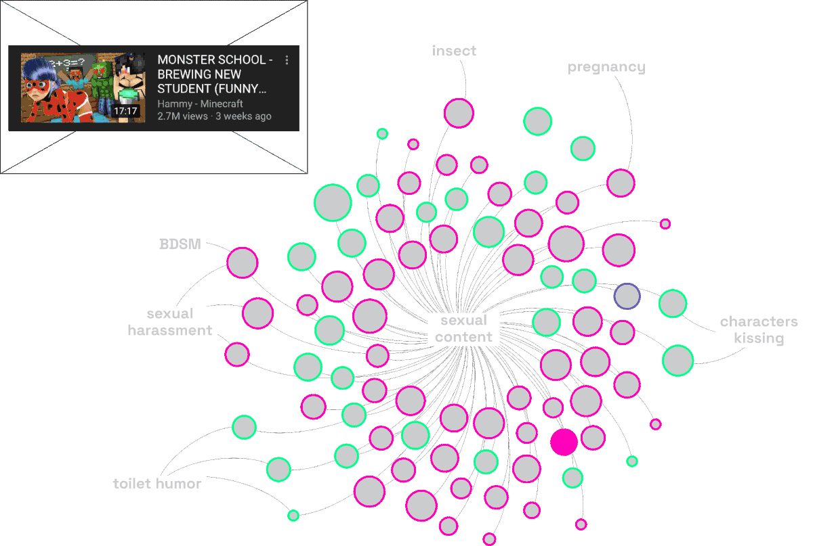
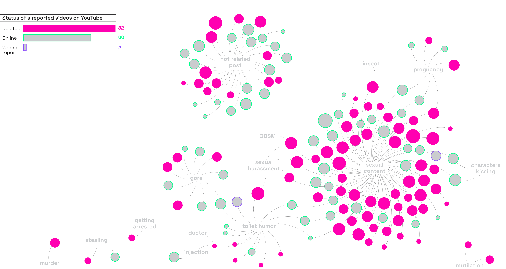
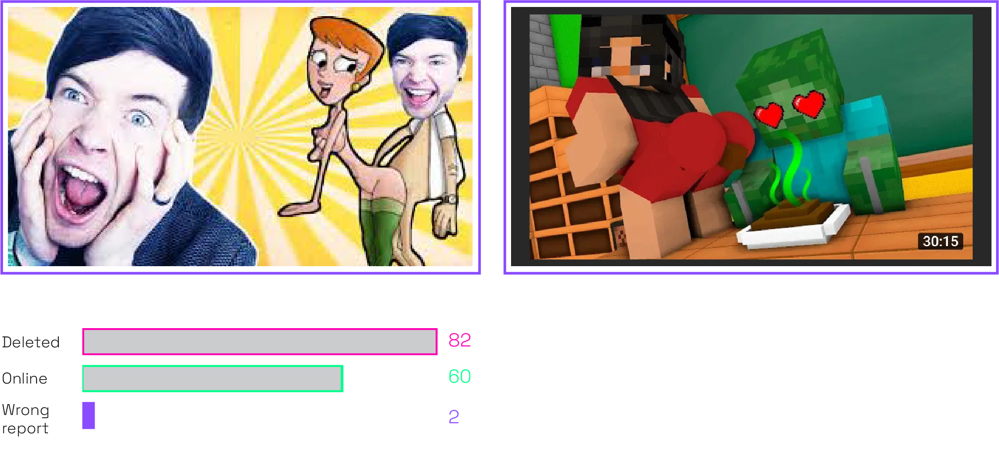

A recent study on inappropriate contents on video streaming platforms, shows how a high amount of violent videos is actually reached by children on Youtube, collecting millions of views before they even get discovered, reported and removed from the platform. The danger for kids is real and YT does not provide content curation service to prevent it. r/Elsagate sub-Reddit still seems to be a good place to speak about those problems, targeting the right ways to make a report, even if not all users respect the rules ▎
The majority of videos reported on r/ElsaGate sub-Reddit posts are related to sexual contents. Their thumbnails are the most explicit ones, easier to detect and clearly more defined than the ones related to other issues.

There is not a strict correlation between the number of upvotes registered by a post and the fact that the video reported in it has been removed from YouTube or not. Anyway, it has been noticed that most of the contents reported is now offline.

The sub-Reddit defines guidelines to understand which videos could be marked as “ElsaGate”. However some users still report contents that are not actually respecting the given criteria. Majority of those are still online, despite the high amount of upvotes.

There are just 2 out of 145 posts that are wrongly reported, because they miss indications to retrace them on YT, like video title or channel’s name. Since this percentage is so small, this sub-Reddit still represents an effective tool to have a complete overview on this kind of content.
